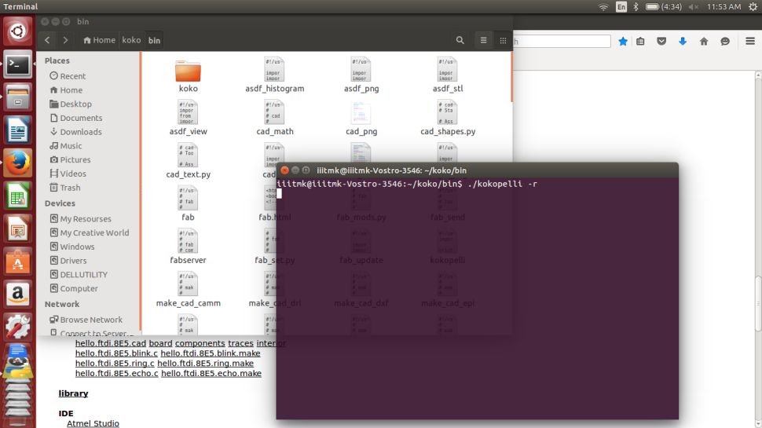
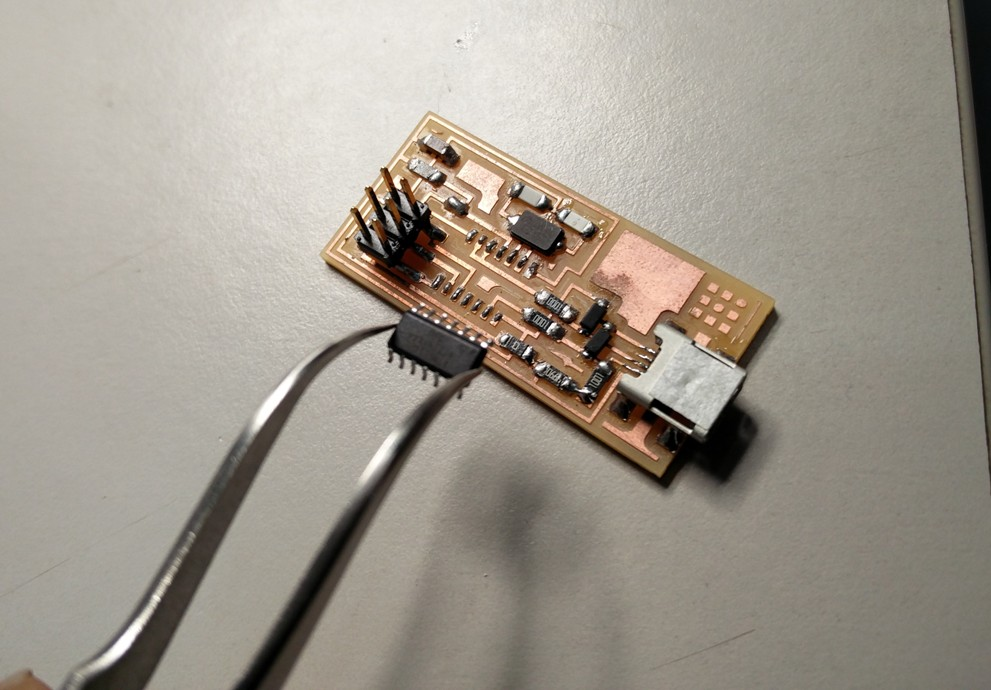

MODELLA - PCB MILLING
The modela is a awesome little milling machine that can mill out most of the PCBs you will need for rapid prototyping. To be able to mill on it, you need to have FR1 which is a paper based copper plate. You cannot mill the fiberglass copper plates on the modela as it will break your bit and the dust it will create is irritant. The FR1 is more tan than the fiberglass, which is more green, and the FR1 is available in 2x3 inch and 4x6 inch pieces.

The first step is to Fix the sacrificial layer PCB on to the modela base plate using double sided tape. We must ensure that it is alligned perfectly to the orgin.

The second step is to Fix the PCB to be milled on to the modela base plate over the sacrificial layer using double sided tape.
Proper care should also be taken to make sure that there are no uneven surfaces as it will otherrwise result in improper milling.
Next step is to fix the proper bit for milling. The 1/64" bit is used for milling tracks and 1/32" bit for milling out the unused areas and cutting board edges.
The bits are fixed with the help of allen key tool. This is done in the view mode of Modela. At first the bit is kept well above the desired height to position the Z manually. Once the orgin is chosen and the head is moved to the desired location,( lower the bit using UP/DOWN keys / adjusting the bit height fixed with the help of allen key ) of modela to touch the PCB. Now tighten the bit in the chosen location, and you are ready to start milling.
Picture shows the bit fixed to the desired (x,y) ready for milling. Care should be taken to select the orgin with enough clearance from the edges.
Moving on to the software side, to control the modela, open terminal and type 'fab' which will invoke the fab modules service menu as shown.
Here choose input format as " image " and output to process as " Roland MDX 20 mill (.rml) "
Unlike how it should open the interface to control modela, I received a serial Exception as shown below.

This happens beacuse the interface software is unable to get connected with the Modela machine.
To fix this problem, open another terminal and type as follows,
$ sudo chmod 666 /dev /ttyUSB0
This command will reestablish communication with modela and the user interface will be opened.

The software interface for modela provides options to choose the milling bit preferred ( use 1/64" for milling tracks ) , the option to input file to be milled ( The PNG format of the tracks ), path settings, depth and many other settings to fine tune the process.
Franscisco asked all of us to first mill and assemble the FabISP programmer PCB as it will be further used in the upcoming embedded sessions

We can visualize the board dimensions, path it will be using to move the head etc, once it is verified and found correct, choose make .rml and send it.

The ouput screen will show the estimated time for completion and the machine will start milling.

Once the milling of tracks are finished, inorder to cut the board edge, first change the bit to 1/32", then load the board edge PNG file and repeat the same process that we did while milling the tracks.

The following picture shows the milled PCB, proper care should be taken while taking out the cut PCB as there is always chance to break it while pulling out from the base.
Starting to populate the FabISP pcb starting with the ATTINY microcontroller first.

The completly finished FabISP PCB.

The file used for the process can be downloaded from here
Toggle Menu
KOKOPELLI
kokopelli is an open-source tool for computer-aided design and manufacturing (CAD/CAM).It uses Python as a hardware description language for solid models. A set of core libraries define common shapes and transforms, but users are free to extend their designs with their own definitions.

Franscisco introduced us Kokopelli. We started playing aroung it by downloading the FTDI hello world examples shown in the following screen..

We added a button and LED the exiting board and learned how to tinker with kokopelli
In kokopelli we never draw a circuit, instead we write codes for that as shown below. The graphical reasult is shown to the right.

Once the initial starting trouble was overcome, playing around kokopeilli was fairly straight forward and easy to understand. We should understand how each component is added as classes and how to place them in the borad refereing to another component already exixting in the board.
I completed the board with out much difficulty and it is ready to be exported for miling, while exporting we can mention the resolution of pixels. Initially I gave 10, but it was not sufficient and then I repeated the same with a resolution setting of 40.

Inorder to export the traces and board outline seperately, we have to comment or uncomment the desired output settings available in the initial part of the code as shown below.
The image files are ready to be milled and the screen shots of the same are attached for reference. I am not givng a detailed description about how to mill PCBs as it is already explained in the Modella PCB Milling section.

Milling the traces..

Cutting the board edges..
The completed PCB.
Now it is time to assemple the PCB, I had some confusion while trying to find the Anode and Cathode of the SMD LED, The following diagrams are for reference.
The completly assembled PCB.

The file used for the process can be downloaded from here
Toggle Menu
EMBEDDED PROGRAMMING
FAB ISP -- STORY WITH FRANCISCO - Exploring the Mystery of Crystal Osc !!
Downloading the FabISP firmware to the ISP programmer I assembled.

Changes to be made while using the AVR programer.
Initially I received the following error as I did not had the proper compiler installed.

Debugging and trouble shooting the error..
Fixed the error by installig the proper versions of compiler.
Generating the Hex to be dumped to the Microcontroller.
All the twist started at this point when I tried to dump the firmware to the ISP module.
In noway the program was geting loaded into the ISP microcontroller and kept on giving the error as shown below.

We suspected the microcontroller to be faulty and tried to change that, but that did not solve the problem

Me and Francisco were never ready give up and wanted to see it work this day itself.
We kept on trying many options till late night. We tried to change the crystal and also tried to reflow all the solderings, but to our great disappointment nothng worked and we had to finally call it a day.
An intense googling did help Francisco to thnik in the direction of the least suscpected cable that we used for connecting the ISP module to be defective. He asked me to try changing that, and to all our great surprise the ISP got programmed flawlessly :-)
The chances are very less to suspect the cable as it was without any problem powering the module, well to our great relief we fixed the problem and my ISP module is ready finally :-)
My FabISP module sucessfully being programmed finally by the AVR programmer.

More about real world application of embedded programing can be found on my project documentation section.
Toggle Menu
INTERFACE PROGRAMMING

Links to add ATTINY library with Arduino.

Installing and Updating the Library.

Installing Serial Port Monitoring Software to control and read data from the Microcontroller using PCs Serial Port.
Inorder to learn interface and interactive programing we tried the following with the FTDI Hello world board developed using Kokopelli.
The following are screenshots for reference.
The file used for the process can be downloaded from here
Toggle Menu